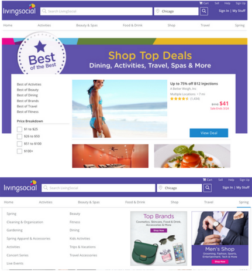
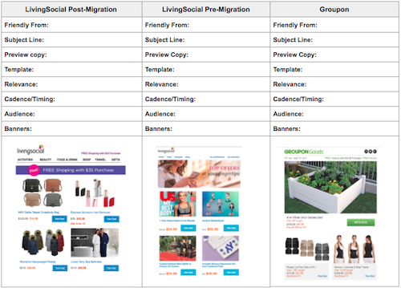

Overview
Groupon acquired LivingSocial in November 2016 and needed to migrate all site, email and app operations to the Groupon platform by June 2017. As employee #2 on the Groupon side, I played quarterback for all things merchandising, email and campaign related while hiring and training a team of marketing coordinators. I’d consider it the equivalent of running an ultra-marathon… but for websites!
Objectives
- Build initial set of landing pages and merchandised assets for all themed and promotional campaigns
- Rebuild email program for Local, Goods, Travel and Cross-Channel businesses on Groupon platform
- QA email, site and app-messaging when operations migrated to Groupon system
Deliverables
Landing Pages & Merchandising Assets: In order to drive customers to relevant inventory and landing pages, I analyzed past campaign and deal performance to create a dynamic set of experiences for the customer. I then kicked-off creative briefs, curated inventory and built the pages and set up merchandised assets on the Groupon CMS system
Email Programs: I to worked ensure that the successful aspects of the existing LivingSocial email strategy were maintained while also incorporating proven tactics from the new Groupon email platform. I then proceeded to rebuild templates, inventory parameters, cadence and audience segmentation for all emails. Phew! I’m tired just rewriting this.
QA: Leading up to and on the day of relaunch, I worked with teams across the board to troubleshoot and lock-down marketing and merchandising messaging on the new platform. Some of the teams I worked with included app operations, email, UX, deliverability and mobile-web teams
Results
Landing Pages & Merchandising Assets:
- Initial set of 15 landing pages with supporting merchandising assets
- A calendar of upcoming 3 months of campaigns
Email programs:
- Initial set of 12 email templates and campaign-types that drove over 50% of Q3 revenue and traffic to LivingSocial.com
- Double digit increase in email revenue prior to migration
Successful migration! On-time launch and 100% uptime.
Landing Page Content
Landing pages with top-performing deal-collections as well as on-site assets to drive awareness and traffic to the experience.

Email Migration Plan
An snapshot of the exercise that I went through to identify the right blend of pre-migragation email strategy, brand differentiation and optimization for the new email platform.
